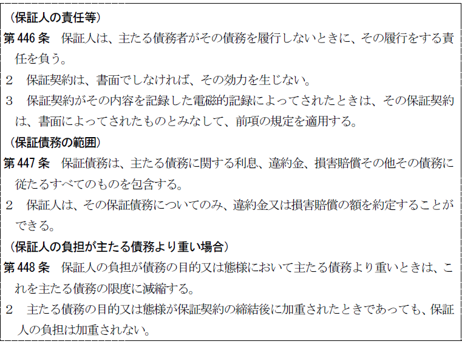
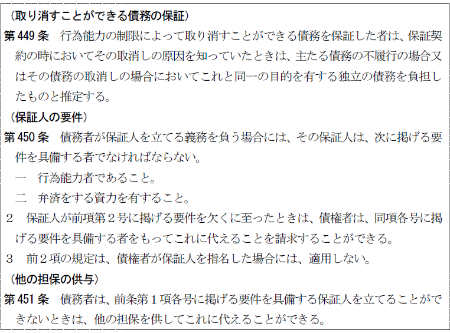
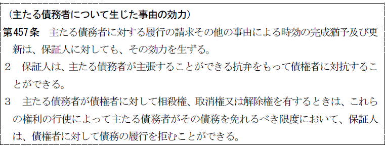
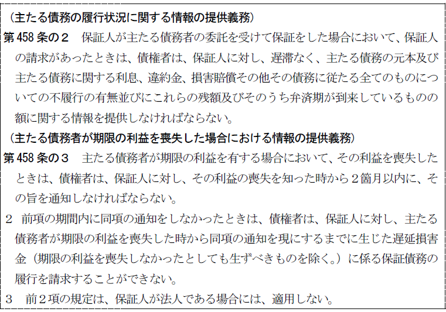
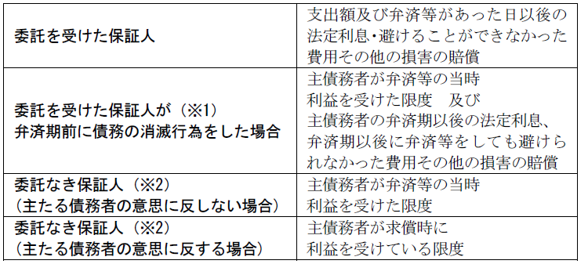
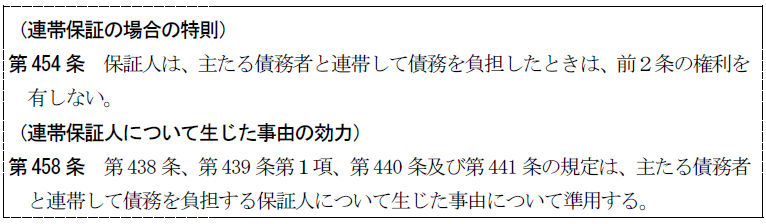
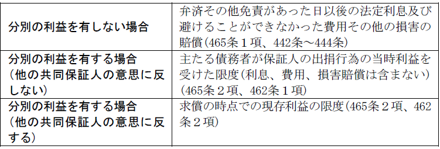
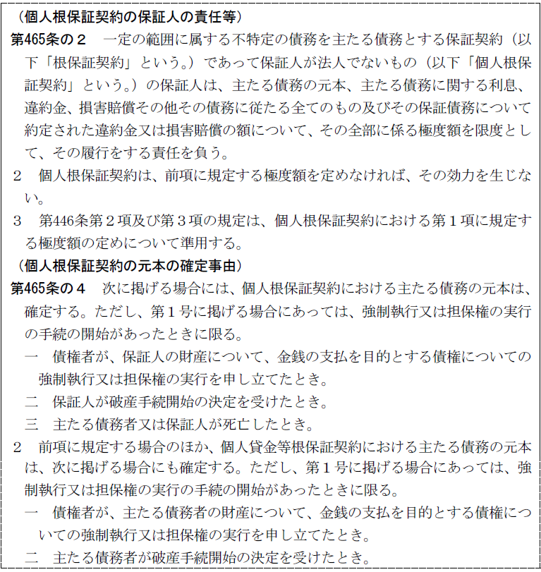
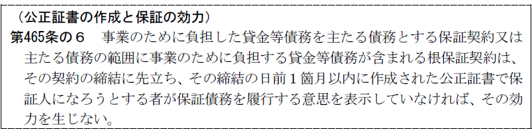
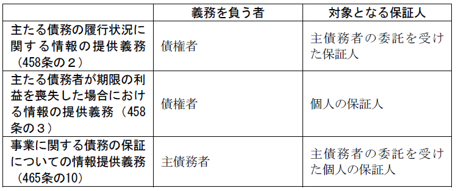

第４編 債権総論
第３章 多数当事者の債権関係
第４節 保証債務


Ⅰ 保証
1. 意義
：主たる債務者がその債務を履行しない場合に、他人の債務を保証した者（保証人）がその債務を履行する責任を負うこと
2. 性質
(1) 独立性
保証債務は、主たる債務とは別個の独立した債務であり、債権者と保証人との間の契約によって生じるものである。そのため、保証人は、その保証債務についてのみ、違約金又は損害賠償額の予定を特約できる（447条２項）。
(2) 内容同一性
保証債務は主たる債務の担保を目的とするから、主たる債務と同一内容の給付を目的とする。
従って、主債務は代替的給付を目的とするのが通常である。不代替的給付債務（ex.特定物の給付）につき保証した場合は、主債務が不履行によって、損害賠償債務に変じたときの保証契約をしたものと解される。
(3) 付従性
保証債務は主たる債務の担保を目的とするものであることから、主たる債務の存在を前提とし、主たる債務に従たる性質をもつ。
(a) 主たる債務が成立しなければ保証債務も成立しない（成立の付従性）。
ただし、主たる債務は現実に発生している必要はなく（将来の債務の保証も可能）、また限定的ではあるが、根保証も認められる（465条の２以下）。
(b) 主たる債務が消滅すれば保証債務も消滅する（消滅の付従性）。
(c) 保証債務の内容･態様が主たる債務より軽いことはよいが、重くてはならない。重い場合は主たる債務の限度に減縮される（448条１項、内容の付従性）。
ただし、保証債務につき別途に保証人が違約金や損害賠償額を予定することは可能である（447条２項）。
(4) 随伴性
主たる債権が移転すれば、保証債務もそれに伴い移転する。
ただし、主たる債務が免責的債務引受けによって移転しても保証債務は随伴しない。債務者の変更は、債権の実質的な価値を変更するからである。
(5) 補充性
保証債務は、主たる債務が履行されない場合に第二次的に履行すべき債務である（446条１項）。
保証人は催告・検索の抗弁を有する（452条、453条）。もっとも、補充性は連帯保証の場合には認められない（454条）。
1. 保証債務は、債権者・保証人間の諾成･要式の契約（保証契約）によって成立する。
保証契約は書面または電磁的記録でしなければその効力を生じない（446条２項）。保証を慎重ならしめる必要があるからである。
2. 保証人・主たる債務者間の事情
保証契約は債権者・保証人間の契約であるから、保証人・主たる債務者間の事情は保証債務の成立に影響を及ぼすものではない。また、主たる債務者の意思に反する場合でも成立する（462条２項参照）。
3. 保証人の資格
保証人の資格については一般的な制限はない。
ただ、債務者が保証人を立てる義務を負う場合には、①行為能力者であること、②弁済をする資力を有することが必要である（450条１項）。
保証人が②の要件を欠くに至ったときは、債権者は代わりの保証人を立てることを請求することができる（同条２項）。これらの要件は、債権者が保証人を指名した場合には、不要である（同条３項）。また、債務者がこれらの要件を具備した保証人を立てることができないときは、他の担保を供してこれに代えることができる（451条）。
1. 保証債務の範囲（447条）
(1) 元本の他に、主たる債務に関する利息、違約金、損害賠償その他その債務に従たるすべてのものを包含する（447条１項）。
(2) 債務不履行に基づく損害賠償義務
損害賠償義務は、主たる債務と同一性を有するので保証の効力が及ぶ（大判明38.７.10）。
(3) 解除による原状回復義務
Ｑ 保証債務は、主たる債務者の債務不履行に基づく解除による原状回復義務にまで及ぶか。
原状回復義務は本来の債務が契約解除によって消滅した結果生じる別個独立の債務であることから問題となる。
＜判例＞ 最大判昭40.６.30
「特定物の売買における売主のための保証においては、通常、その契約から直接に生ずる売主の債務につき保証人が自ら履行の責に任ずるというよりも、むしろ、売主の債務不履行に基因して売主が買主に対し負担することあるべき債務につき責に任ずる趣旨でなされるものと解するのが相当であるから、保証人は、債務不履行により売主が買主に対し負担する損害賠償義務についてはもちろん、特に反対の意思表示のないかぎり、売主の債務不履行により契約が解除された場合における原状回復義務についても保証の責に任ずるものと認めるのを相当とする。」
2. 対外的効力
保証人にはいくつかの抗弁権が認められる。
(1) 補充性に基づく抗弁権
(a) 催告の抗弁権（452条）
債権者が保証人に債務の履行を請求してきたとき、保証人は、まず主たる債務者に催告すべき旨を請求することができる。
(b) 検索の抗弁権（453条）
保証人が主たる債務者に弁済をする資力があり、かつ、それに対する執行が容易であることを証明したときは、債権者は、まず主たる債務者の財産に執行しなければならない。
※ 連帯保証では、催告・検索の抗弁権はない（454条）。
(2) 付従性に基づく抗弁権
(a) 主たる債務者の有する抗弁権
同時履行の抗弁権（533条）、期限未到来の抗弁等、保証人は主たる債務者の抗弁権を援用できる。なぜなら、保証債務の付従性に基づき、保証債務は主たる債務よりも重くなることは許されないからである。
(b) 時効の援用
主たる債務が時効消滅した場合
① 保証人は消滅時効を援用できる。
② 主たる債務者が時効の利益を放棄した後でも保証人はなお時効を援用することができる（大判昭６.６.４）。
③ 保証人が自ら保証債務について時効の利益を放棄したのちに、主たる債務者が主たる債務の消滅時効を援用した場合、保証人はあらためて消滅時効を援用することができる。
④ 主たる債務の消滅時効完成後に、主たる債務者が債務を承認し、保証人がそれを知って保証債務を承認した場合には、保証人がその後に主たる債務の消滅時効を援用することは、信義則（１条２項）に照らして許されない。
(c) 相殺権
主債務者が相殺の抗弁を主張できるとしても、保証人は相殺することはできず、履行拒絶の抗弁権を有する（457条３項）。
(d) 取消権・解除権
主たる債務者が取消権・解除権を有する場合、保証人はその限度で履行拒絶権を有する（457条３項）。
3. 主たる債務者・保証人について生じた事由

(1) 主たる債務者に生じた事由
主たる債務者に生じた事由は、原則として、保証人に効力を及ぼす。
ⅰ 主たる債務者に対する時効の完成猶予及び更新は、保証人に対しても効力を生じる（457条１項）。
ⅱ 主たる債務者について債権譲渡の対抗要件が具備されれば、保証人に対しても効力を生じる。
(2) 保証人について生じた事由は、主たる債務者に対して影響を及ぼさない。
(a) 保証人に対して債権譲渡の通知をしても、主たる債務者に対する通知とはならず、従って、保証人に対しても譲渡を対抗することはできない。
(b) 保証人が債務を承認しても主たる債務の時効を更新しない。従って、その後に主たる債務の消滅時効が完成すれば、保証人は消滅時効を援用することができる。
4. 債権者の情報提供義務

(1) 主債務の履行状況
委託を受けた保証人は、債権者に対し、主債務の履行状況の提供をするよう請求できる。主債務の残額や債務不履行は、保証債務の内容に関わる重要なものであるからである。
(a) 請求できる保証人
委託を受けた保証人である。主債務の履行状況に関する情報の提供は、主債務の個人情報であるため、委託を受けない保証人には請求権がない。
(b) 債権者の義務
委託を受けた保証人から主債務の履行状況に関する情報の提供を請求された債権者は、遅滞なく当該情報を提供しなければならない。
(2) 主債務者の期限の利益喪失
主債務者が期限の利益を喪失した場合、債権者は期限の利益喪失を知った時から２か月以内に、個人の保証人に対し、その旨を通知しなければならない。
この通知により、保証人が知らない間に遅延損害金が多額となることを防ぐことができる。
(a) 請求できる保証人
個人の保証人のみが対象であり、法人は含まれない。
(b) 期間内の通知をしなかった場合
債権者は、主債務者の期限の利益喪失時から現に通知をするまでに生じた遅延損害金について、保証人に請求できなくなる。
5. 内部関係（求償関係）

保証人が自己の財産をもって主債務を消滅させた場合、保証人は主債務者に求償することができる。
(1) 求償権の範囲

※1 主債務の弁済期以後に求償できる。
※2 弁済期前に弁済等をした場合、弁済期以後に求償できる。
(2) 求償権の制限
(a) 委託を受けた保証人が弁済等をする場合、主債務者に事前通知をしなければならない。
事前通知なく弁済等をした場合、主債務者は、債権者に対抗できた事由（ex.弁済）をもって保証人に対抗できる。
(b) 保証人が弁済等をした場合、主債務者に事後の通知をしなければならない。
事後通知を怠ったために、主債務者がそれを知らずに弁済等をした場合、主債務者は自分の弁済等を有効とみなすことができる。
(3) 主債務者の事後通知の要否
主債務者は、委託を受けた保証人に対しては、事後の通知義務がある。
債務者の弁済後、事後通知がなく、委託を受けた保証人がそれを知らずに弁済等をした場合、自分の弁済等を有効とみなすことができる。
(4) 委託を受けた保証人の事前求償権
460条１号～３号に該当するときは、委託を受けた保証人から主債務者に対する事前求償権が認められる。
Ｑ 委託を受けた物上保証人に事前求償権は認められるか。
→ 否定説 （最判平２.12.18）
①372条の準用する物上保証人の求償権に関する351条の文言から明らか
②物上保証人の場合には担保権設定によって設定者の行為は完了し、委任事務処理費用の前払請求権としての性質を有する事前求償権が発生する余地がない。
③求償権の範囲をあらかじめ確定できない。
Ⅱ 特殊の保証

1. 意義
：主たる債務者と連帯して保証債務を負うもの
2. 保証人と債権者との連帯保証契約により成立する。
3. 効力
(1) 対外的効力
連帯保証人には補充性がない。そのため、催告・検索の抗弁権がない（454条）。
(2) 主たる債務者・保証人について生じた事由
主たる債務者に生じた事由は、連帯保証人に効力を及ぼす。
連帯保証人に生じた事由は、438条、439条１項、440条及び441条の規定が準用される（458条）。従って、①更改、②相殺、③混同以外の事由は相対的効力を有するのみである。
(3) 内部関係
主たる債務者と連帯保証人との間の求償関係は、通常の保証債務と同じである。
1. 意義
：同一の主たる債務について、保証人が複数存在するもの
2. 債権者に対する関係
(1) 分別の利益
共同保証人は、原則として、各別の行為で保証債務を負担したときでも、主たる債務の額を平等の割合で分割した額についてのみ保証債務を負担する（456条、427条）。
(2) 例外
以下の場合は、分別の利益は有しない。
①主たる債務が不可分の場合（465条１項）、②保証連帯（数人の保証人間に連帯の特約があるとき）の場合（465条１項）、③連帯保証（共同保証人の各自が主たる債務者と連帯するとき）の場合
これらの場合は、各共同保証人はそれぞれ全部を弁済すべき義務があるのだから、分別の利益を有しないのは当然である。
3. 内部関係
(1) 主たる債務者に対しては出捐全額を求償することができる。
(2) 他の共同保証人に対しても求償できる。
【求償権の範囲】


1. 個人根保証契約
(1) 意義
個人根保証契約：一定の範囲に属する不特定の債務を主たる債務とする保証契約（根保証契約）であって保証人が法人でないもの（465条の２第１項）
従来より、民法では根保証契約について特段の法的規制をしていなかったため、保証の限度額や保証期間の定めのないいわゆる包括根保証契約が多用されていた。その結果、近時の厳しい経済状況の下で、保証人が過大な保証責任の追及を受ける事例が多発しており、包括根保証契約に対する法的規制を講ずる必要があると指摘されていた。
そこで、民法は、個人の保証人が過大な責任を負うことを防ぐため、個人根保証契約に関する規定を置いた。
(2) 効力要件
①書面または電磁的記録で契約すること（446条第２項・第３項）
②書面または電磁的記録で極度額を定めること（465条の２第３項）
(3) 元本確定事由
465条の4第１項に規定が置かれている。
2. 個人貸金等根保証契約（465条の３）
(1) 意義
個人貸金等根保証契約：個人根保証契約のうち、主たる債務の範囲に金銭の貸渡しまたは手形の割引を受けることによって負担する債務が含まれるもの
(2) 元本確定期日
原則：契約締結日から３年で確定する。
例外：契約締結日から５年以内の日を定めた場合はその日に確定する。５年経過日より後の日を定めても無効である（465条の３第１項）。
元本確定期日は書面又は電磁的記録で定めなければ効力を生じない。
(3) 元本確定事由
465条の４第１項及び第２項に規定がおかれている。

事業に関する債務は高額になりがちであり、保証人の生活が破綻することもある。そこで、個人の保証人が安易に保証人にならないよう、公証人による保証意思確認の規定を置いた。
対象は個人の保証人のみであり、法人は含まれない。
(1) 保証意思宣明公正証書の作成が不要な場合（465条の９）
主な場合は、以下の通りである。
① 主債務者が法人である場合で、保証人が主債務者の理事、取締役、執行役またはこれらに準ずる者であるとき
② 主債務者が個人である場合で、保証人が主債務者と共同して事業を行う者であるとき
③ 主債務者が個人である場合で、保証人が主債務者の事業に現に従事している主債務者の配偶者であるとき
(2) 方式
462条の６第２項に規定が置かれている。
(3) 主債務者の情報提供義務（465条の10）
事業に関する債務について、主債務者から個人の保証人に委託する場合、主債務者は、財産及び収支の状況などについての情報を提供しなければならない。
必要な情報提供をしなかった、または、事実と異なる情報を提供した場合、保証人は、保証契約を取り消すことができる。
【保証に関する情報提供義務】
